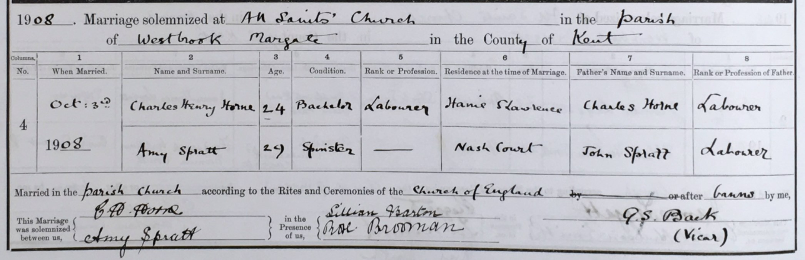
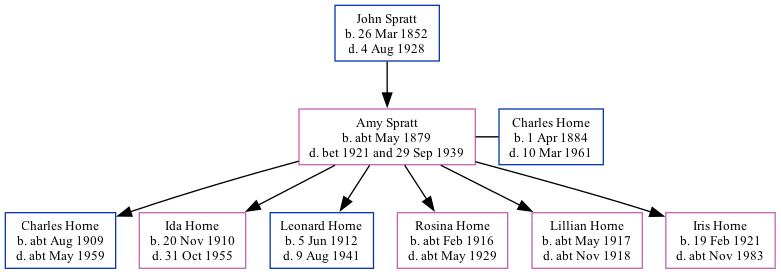

Amy Horne (née Spratt) cMay 1879 - 1921
[ Home ] | [ Calendar ] | [ Surnames Index ] | [ Family History ]The child of John Spratt (an agricultural laborer), Amy Spratt, the great-aunt of <a href="I1.html">Nigel Horne</a>, was born in St Nicholas-at-Wade, Kent, England <i>c.</i> May 1879<span class="citation">1,2,3,4,5,6</span>, was baptized there on Jun 1, 1879 and married Charles Horne (a market gardener worker with whom she had 6 children: <a href="I312.html">Charles Isaac</a>, <a href="I313.html">Ida May</a>, <a href="I1345.html">Leonard Edmund</a>, <a href="I3732.html">Rosina Ellen</a>, <a href="I3199.html">Lillian A</a> and <a href="I311.html">Iris Joan</a>) at All Saints Church, Westbrook, Margate, Kent, England on Oct 3, 1908<span class="citation">7</span>.</p><p>Throughout her life, Amy lived in several places: at her birthplace in 1881<span class="citation">1</span>; at The Street in St Nicholas-at-Wade on Apr 3, 1881<span class="citation">8</span>; at her birthplace in 1891<span class="citation">2</span>; in Birchington, Kent in 1901<span class="citation">3</span>; at Walnut Tree Cottages, Haine, Thanet, Kent on Apr 2, 1911<span class="citation">9</span>; and at Sacketts Hill Farm, St Peters, Thanet, Kent on Jun 19, 1921<span class="citation">10</span>. <p>She died between 1921 and Sep 29, 1939.
Parents
- John was born on Mar 26, 1852
Children
- Charles Isaac was born c. Aug 1909
- Ida May was born on Nov 20, 1910
- Leonard Edmund was born on Jun 5, 1912
- Rosina Ellen was born c. Feb 1916
- Lillian A was born c. May 1917
- Iris Joan was born on Feb 19, 1921
Citations
- 1881 England Census Online publication - Provo, UT, USA: The Generations Network, Inc., 2004. 1881 British Isles Census Index provided by The Church of Jesus Christ of Latter-day Saints © Copyright 1999 Intellectual Reserve, Inc. All rights reserved. All use is subject to the
- 1891 England Census Online publication - Provo, UT, USA: The Generations Network, Inc., 2005.Original data - Census Returns of England and Wales, 1891. Kew, Surrey, England: The National Archives of the UK (TNA): Public Record Office (PRO), 1891. Data imaged from The National
- 1901 England Census Online publication - Provo, UT, USA: The Generations Network, Inc., 2005.Original data - Census Returns of England and Wales, 1901. Kew, Surrey, England: The National Archives of the UK (TNA): Public Record Office (PRO), 1901. Data imaged from the National
- 1911 England Census Online publication - Provo, UT, USA: Ancestry.com Operations, Inc., 2011.Original data - Census Returns of England and Wales, 1911. Kew, Surrey, England: The National Archives of the UK (TNA), 1911. Data imaged from the National Archives, London, England.
- England & Wales, FreeBMD Birth Index, 1837-1915 Online publication - Provo, UT, USA: The Generations Network, Inc., 2006.Original data - General Register Office. England and Wales Civil Registration Indexes. London, England: General Register Office. © Crown copyright. Published by permission of the Cont
- Kent Marriages And Banns - Findmypast
- 1911 England Census Online publication - Provo, UT, USA: Ancestry.com Operations, Inc., 2011.Original data - Census Returns of England and Wales, 1911. Kew, Surrey, England: The National Archives of the UK (TNA), 1911. Data imaged from the National Archives, London, England.
- 1881 England, Wales & Scotland Census - Findmypast (was age 2 and the daughter of the head of the household)
- 1911 Census for England & Wales - Findmypast (was age 31 and the wife of the head of the household)
- 1921 Census Of England & Wales - Findmypast (was age 42 and the wife of the head of the household)
Media
Charles Horne - Amy Spratt - Marriage

England & Wales marriages 1837-2008 - BMD/M/1908/4/AZ/000186/226
1911 England, Wales - GBC-1911-RG14-04511-0115-3
1911 England, Wales & Scotland Census Transcription - GBC-1911-RG14-04511-0115-4
England & Wales births 1837-2006 - BMD/B/1879/2/AZ/000529/015
England & Wales marriages 1837-2008 - BMD/M/1908/4/AZ/000356/294
England Births & Baptisms 1538-1975 - R_884660742
Kent Baptisms - GBPRS/CANT/B/96802125
1921 Census of England & Wales - GBC/1921/RG15/04458/0431/02
Kent Marriages And Banns - GBPRS/CANT/MAR/009503/2
Family Tree
Generated by Ged2Site. Last updated on Jul 20, 2025